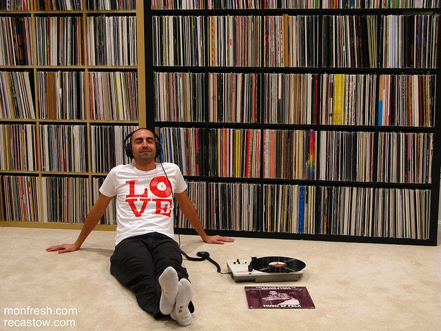

Hey there.
My name is Ashley Nguyen, and I'm a journalist based in Washington, D.C. Until July 2014, I served as a Peace Corps volunteer in Kyrgyzstan, a small country in Central Asia. There, I taught English, learned Russian and resisted people who urged me to eat mutton. Prior to Kyrgyzstan, I worked at Philly.com reporting on the suburbs of Philadelphia.


Recent stories
18F’s Moncef Belyamani recalls his first major coding project: an online record store
The former Code for America fellow and current 18F innovation specialist brings us back to 2003.
Viget front-end developer Megan Zlock on finding balance in the workplace
The programmer and artist talks about her work habits, “turning off” and why Slack is so damn distracting.
BBC World Service future-proofs its news apps to match tech boom in Africa

In August 2014, a BBC Connected Studio team traveled to four countries in Africa with one goal in mind: To future-proof BBC for the changes happening in Sub-Saharan Africa.